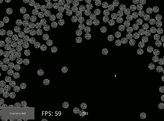

Chipmunk2d Provides Smooth, Multitouch Enabled Physics Interaction
Getting Started
Read the getting started tutorials
Documentation
Visit the documentation
Supported Python Versions
Python2 and Python3
Supported Platforms
Tested on Linux (Ubuntu 14.04), Windows 10, OSX, and Android. Should work on iOS but untested.
20,000 Sprites Being Rendered

Introduction
KivEnt is a framework for building performant, dynamic real-time scenes in Kivy. While not as powerful as something like the Unreal engine or Unity3d, KivEnt is capable of creating games that handle several thousands to tens of thousands of entities, depending on what type of processing we are doing on them. You can easily have a hundreds thousand static sprites rendered in the background if they do not have any dynamic processing. At the same time, almost the entire API is accessible through Python, with a more performant cythonic API for those looking to get closer to the metal. Even without creating any cython gamesystems, you ought to be able to create games that feature up to several thousand game objects at once.
The only dependency for the kivent_core module is Kivy itself. Additional modules may have other requirements, such as kivent_cymunk module being based on Chipmunk2d and its cymunk wrapper.
An entity-component architecture is used to control game object state and the logic of processing the game objects. This means that your game objects will be made up of collections of independent components that stricly hold data; each component corresponds to a GameSystem that will perform all data processing on the components, in the update loop each frame, and as a result of user interaction or other programmaticaly generated events. All memory for the built-in components is allocated statically: if you would like learn more about memory management, read here
KivEnt is built with a modular architecture and designed to have both a python api and a c-level cython api that allows more performant access to your game data. This makes it suitable for quickly prototyping a mechanic completely in python, and relatively trivial to then deeply cythonize that GameSystem if you find it to be performance sensitive. This process has already been done for the built-in components meaning they are ready for you to build new, performant game systems on top of them.
The entire framework is made available to you with an MIT license so that you have the freedom to build whatever you want on top of it and monetize it however you like.
The simulation below is created using this pure python code. It is still capable of handling updates on 5000 entities at nearly 60 fps, while creating and deleting entities in python at a rate of about 1250 per second.
5,000 Stars Being Rendered, with non-cythonized GameSystems
News
__________________KivEnt 2.2 was released on December 30, 2016. Major features include SVG support, OSX support, Tiled support, an expanded set of renderers for colored geometry, and build in support for sounds and animations. To learn more about the release read here. KivEnt 2.2 represents 81 commits with 8,414 additions and 353 deletions; a huge thank you to all our developers!
___________________KivEnt 2.1 was released on Augst 9, 2015. Major features include a module for rendering vertex colored polygons, a new particle effects engine, and a more flexible and performant VertexModel class for storing your model data. To learn more about the release read here. KivEnt 2.1 represents 52 commits with 4,206 additions and 7,726 deletions; there has been a lot of cleanup!
I have also built a new version of the Particle Panda app for use with the new kivent_particles module. Find it on GitHub to build from source, or download the Android app or Windows app
___________________KivEnt 2.0 represents 344 commits by 6 contributors! A huge thank you to github users chozabu, tshirtman, mahomahomaho, squarrel, and inclement!
Compared to the KivEnt 1.0 release there has been 17,663 additions, 4,267 deletions, we now have Windows support, performance has increased significantly, the python api has been cut down and simplified, and the cython api has advanced significantly. It should be fairly easy to create new GameSystems benefiting from the static memory optimizations, and much easier to write new renderers that make use of different shader formats.
A little over a year ago KivEnt 1.0 was released and here are some examples of things created using the framework
- The Boardz Alpha was released for android a few months ago: free, ad-free.
- chozabu has also worked on a graphical editor for building levels github
Interactive Mall Map with KivEnt
Mailing List
Visit the google group
Contact Info:
You can contact me at kovac1066@gmail.com or find me in Kivy's irc channel where I am kovak. On reddit, I'm JKovac.
Several Thousand Sprites with Full Physics